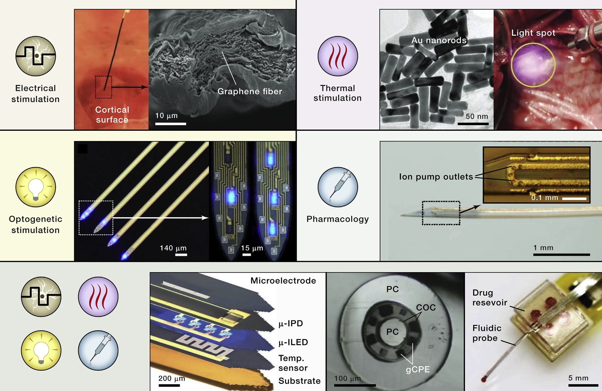
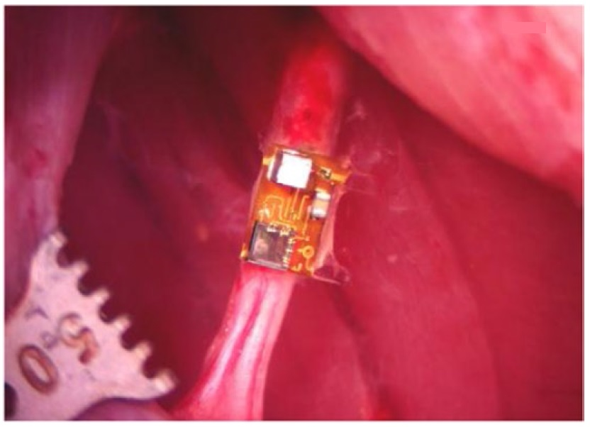
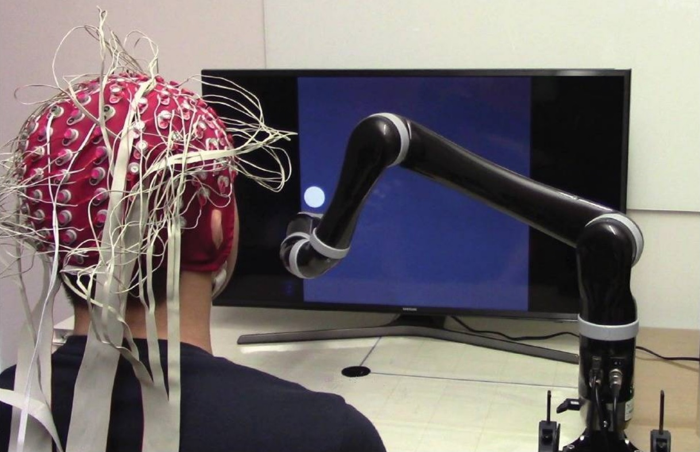
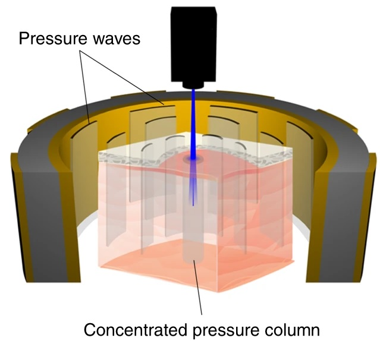
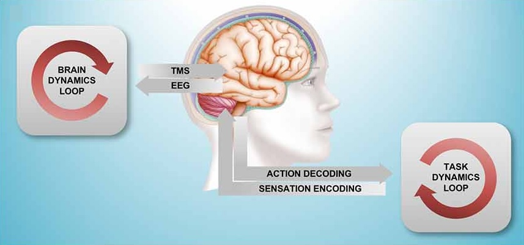

Interesting papers
Dynamic stimulation of visual cortex produces form vision in sighted and blind humans
Cell (2020)

- Visual cortical prosthesis
- Electrical stimulation
×
Visual cortical prosthetic (VCP) relys on the hypothesis that individual phosphenes are analogous to pixels and that they can easily be combined to generate a coherent image.
But this hypothesis has not been fully demonstrated yet.
This group developed an alternative strategy which shapes were traced on the surface of visual cortex by stimulating electrodes in dynamic sequence .
Accordingly, dynamic stimulation enabled accurate recognition of letter shapes predicted by the brains' spatial map of the visual world.
These findings show that a brain prosthetic can produce coherent percepts of visual forms.
Experiments
E-1: Current steering in the visual cortex
To examine the efficacy of current steering in the human visual cortex, they implanted ECoG electrodes on the primary visual cortex. They delivered five intensity levels of 60 Hz, 100 ms electrical stimulation trains. While delivering the trains, they asked the participants to report their percept by drawing the perceived location of the phosphene on a touch screen. As a result, the different intensities of stimulation could createvirtual electrodes located between the two physical electrodes and implement current steering.
E-2: Combining dynamic stimulation with current steering
To test the efficacy of dynamic stimulation in combination with current steering, they implanted five electrodes between the anteriorly and posteriorly along the lingual gyrus. They gradually increased and decreased current to electrodes on a 400 ms window at 120 Hz. The participants reported that the percepted a "line being drawn" with rating 8 on a scale of 1 to 10. (1 for discrete and 10 for continuous)
E-3: Combining dynamic stimulation with current steering
To examine whether dynamic stimulation of the visual cortex could evoke form percepts, they conducted a experiment with 24 electrodes implanted on the medial face of the occipital lobe. In the experiment, receptive fields were organized in orderly mannner and the dynamic stimulation sequences corresponded to four letter like forms. (S, C, N, U) As a result, the participants could discriminate the stimulation patterns with accuracy of 66% in the alternative forced choice task. (chance rate of 25%)
E-4: Creating letter percepts in blind participants
They tested the system on two blind patients with five electrodes implanted on the medial wall of visual cortex with seven dynamic stimulation sequences. The drawings were quantized and followed by k-means clutering to achieve 82% and 90% of the letters placed in the correct cluster for the two patients. (boot-strap analysis, p < 1e-5) The 90% accuracy particiant recognized86 forms per minute with 87% accuracy for another test when two forms were presented at a time.
Future directions
First, the presented VCP uses surface eletrodes that electrically stimulates the brain at mA level. If penetration electrodes could be used for the purpose, it would enable stimulating at uA level which could activate smaller volume and hence improve the spatial resolution. Also, using non-electrical stimulation modalities such as optogenetic, mageneto thermal, and focused ultrasound would lead to new advantages in performing VCP.
Beauchamp et al., Dynamic stimulation of visual cortex produces form vision in sighted and blind humans, Cell, 2020.
SummaryExperiments
To examine the efficacy of current steering in the human visual cortex, they implanted ECoG electrodes on the primary visual cortex. They delivered five intensity levels of 60 Hz, 100 ms electrical stimulation trains. While delivering the trains, they asked the participants to report their percept by drawing the perceived location of the phosphene on a touch screen. As a result, the different intensities of stimulation could create
To test the efficacy of dynamic stimulation in combination with current steering, they implanted five electrodes between the anteriorly and posteriorly along the lingual gyrus. They gradually increased and decreased current to electrodes on a 400 ms window at 120 Hz. The participants reported that the percepted a "line being drawn" with rating 8 on a scale of 1 to 10. (1 for discrete and 10 for continuous)
To examine whether dynamic stimulation of the visual cortex could evoke form percepts, they conducted a experiment with 24 electrodes implanted on the medial face of the occipital lobe. In the experiment, receptive fields were organized in orderly mannner and the dynamic stimulation sequences corresponded to four letter like forms. (S, C, N, U) As a result, the participants could discriminate the stimulation patterns with accuracy of 66% in the alternative forced choice task. (chance rate of 25%)
They tested the system on two blind patients with five electrodes implanted on the medial wall of visual cortex with seven dynamic stimulation sequences. The drawings were quantized and followed by k-means clutering to achieve 82% and 90% of the letters placed in the correct cluster for the two patients. (boot-strap analysis, p < 1e-5) The 90% accuracy particiant recognized
Future directions
First, the presented VCP uses surface eletrodes that electrically stimulates the brain at mA level. If penetration electrodes could be used for the purpose, it would enable stimulating at uA level which could activate smaller volume and hence improve the spatial resolution. Also, using non-electrical stimulation modalities such as optogenetic, mageneto thermal, and focused ultrasound would lead to new advantages in performing VCP.
Emerging modalities and implantable technologies for neuromodulation
Cell (2020)

- Neuromodulation modalities
- Implantable devices
×
This paper reviews the current miniaturized implantable devices technologies for controlling neural activity. Future research should be directed towards improving precision, fidelity, long-term viablity and integrate multimodality towards closed-loop feedback and personalized therapeutics. Neuromodulations include neuroprosthetics - repairing and replacing imparied neural function; and neuromodulation - regulating disordered neural activity such as deep brain stimulation, spinal cord stimulation, and vagus nerve stimulation.
Neuromodulation modalities
Electrical
1. Mechanism: induce potential gradients across neurons, to initiate functional responses by depolarizing and hyper polarizing the cell membrane
2. Key metric: charge injection capacity (CIC), defined as maximum deliverable charge per unit area
3. Current directions: development of alternative materials and strategies to increase the electrochemical surface areas
4. Limitations: difficulties in engaging specific types of cells and confined regions; chronic implantation can result in fibrotic responses and the development of scar tissue
Thermal
1. Mechanism: temperature induced changes in the cell memebrain capacitance and changes in the conductance of thermosensitive transient receptor potential ion channels
2. Current directions: stimulation based on upconverting nanoparticles; thermal conversion via magnetic nanoparticles; mesostructured silicon particles for fast photothermal effects
3. Limitations: materials must maintain close proximity to the cells of interest, without diffusion or movement through the tissue
Optical
1. Mechanism: use of photosensitive ion channels or proteins expressed in genetically modified neurons - optogenetics
2. Advantages: high temporal precision and single cell type precision within the illumination volume
3. Current directions: optical fibers or planar silica waveguides; mechanoluminescent nanoparticles
4. Limitations: toxicity concerns and potential for parasitic heating
Pharmacological
1. Advantages: target specific endogenous systems; avoid the need for expression of non-mammalian proteins and not requirement of implantable devices
2. Current directions: overcoming the limited temporal resolution and the inability to program and selectively modulate specific somatic sites
3. Challenges: microfluidic pharmacological techniques for enhancing chemical storage and spatiotemporal resolution
Won et al., Emerging modalities and implantable technologies for neuromodulation, Cell, 2020.
SummaryThis paper reviews the current miniaturized implantable devices technologies for controlling neural activity. Future research should be directed towards improving precision, fidelity, long-term viablity and integrate multimodality towards closed-loop feedback and personalized therapeutics. Neuromodulations include neuroprosthetics - repairing and replacing imparied neural function; and neuromodulation - regulating disordered neural activity such as deep brain stimulation, spinal cord stimulation, and vagus nerve stimulation.
Neuromodulation modalities
1. Mechanism: induce potential gradients across neurons, to initiate functional responses by depolarizing and hyper polarizing the cell membrane
2. Key metric: charge injection capacity (CIC), defined as maximum deliverable charge per unit area
3. Current directions: development of alternative materials and strategies to increase the electrochemical surface areas
4. Limitations: difficulties in engaging specific types of cells and confined regions; chronic implantation can result in fibrotic responses and the development of scar tissue
1. Mechanism: temperature induced changes in the cell memebrain capacitance and changes in the conductance of thermosensitive transient receptor potential ion channels
2. Current directions: stimulation based on upconverting nanoparticles; thermal conversion via magnetic nanoparticles; mesostructured silicon particles for fast photothermal effects
3. Limitations: materials must maintain close proximity to the cells of interest, without diffusion or movement through the tissue
1. Mechanism: use of photosensitive ion channels or proteins expressed in genetically modified neurons - optogenetics
2. Advantages: high temporal precision and single cell type precision within the illumination volume
3. Current directions: optical fibers or planar silica waveguides; mechanoluminescent nanoparticles
4. Limitations: toxicity concerns and potential for parasitic heating
1. Advantages: target specific endogenous systems; avoid the need for expression of non-mammalian proteins and not requirement of implantable devices
2. Current directions: overcoming the limited temporal resolution and the inability to program and selectively modulate specific somatic sites
3. Challenges: microfluidic pharmacological techniques for enhancing chemical storage and spatiotemporal resolution
A wireless millimeter-scale implantable neural stimulator with ultrasonically powered bidirectional communication
Nature Biomedical Engineering (2020)

- Neural stimulation
- Ultrasonic power transmission
×
This paper deals extracellularelectrophysiological stimulation which has been useful in terms of application in neuroscience and clinical therapies.
They built a wireless, leadless and battery-free implantable neural simulator that incorporates piezoceramic transducer , and energy-storage capacitor .
This reduced the total implant size and prolonged the tissue interface longevity by removing transcutaneous wires.
This overcomes the limitations of the previous technologies such as:
1) cochlear implant stimulators which are large and operate only at shallow depth; and
2) neurostimulators and programmed registers
which rely on a recovered clock, are computationally intensive, and are sensitive to changes in waveforms.
Strategies
S-1: External transceiver control
The external transceiver toggled from Tx to Rx mode during the ‘off ’ periods of the transmit signal. This captured and demodulateduplink data from the acoustic signal backscattered by the mote
S-2: Utilizing the ultrasound envelope
Utilized the shape of the incoming ultrasound envelope. This encodedstimulation parameters and eliminated the need for an on chip, continuously running clock to ensure timing precision with reduced power consumption
S-3: Creation of an interphase gap
The chip was in standby mode during state G and the stimulation electrode was tri-stated to create an interphase gap. This decreasedstimulation thresholds in auditory nerves, motor nerves and retinal ganglion cells, as well as
decreasing perceptual thresholds in patients with cochlear implants or epiretinal prosthesis
S-4: Ultrasonic link
High link efficiencies at sub-millimetre transducer sizes and centimetre-scale depths in tissue
Piech et al., A wireless millimeter-scale implantable neural stimulator with ultrasonically powered bidirectional communication, Nat. Biomed. Eng, 2020.
SummaryThis paper deals extracellular
Strategies
The external transceiver toggled from Tx to Rx mode during the ‘off ’ periods of the transmit signal. This captured and demodulated
Utilized the shape of the incoming ultrasound envelope. This encoded
The chip was in standby mode during state G and the stimulation electrode was tri-stated to create an interphase gap. This decreased
High link efficiencies at sub-millimetre transducer sizes and centimetre-scale depths in tissue
Noninvasive neuroimaging enhances continuous neural tracking for robotic device control
Science Robotics (2019)

- EEG-BCI
- Target tracking
×
Brain-computer interfaces (BCIs) using signals acquired with intracortical implants are useful for completing daily tasks.
However, the substantial amount of medical and surgical expertise limits their use beyond a few clinical cases.
This work implemented a noninvasive framework for the continuous EEG-based two-dimensional control of a physical robotic arm .
This overcame the previous limitations of approaches such as
1) discrete trials of neural control; and
2) electrical source imaging (ESI) which do not account for the random perturbations or has not been validated online.
Strategies
S-1: Continuous pursuit task
Users performedmotor imagination to chase a randomly moving target, which verified
stronger behavioral and physiological learning effects
S-2: Real-time ESI platform
Isolates and evaluates neural decoding in both the sensor and the source domains without introducing the confounding online processing steps
Edelman et al., Noninvasive neuroimaging enhances continuous neural tracking for robotic device control, Sci. Robot., 2019.
SummaryStrategies
Users performed
Isolates and evaluates neural decoding in both the sensor and the source domains without introducing the confounding online processing steps
Sono-optogenetics facilitated by a circulation delivered rechargeable light source for minimally invasive optogenetics
Nature Biomedical Engineering (2019)

- Optogenetics
- Focused ultrasound
- Nanoparticles
×
In vivo optogenetic modulation requires invasive craniotomy and intracranial implantation of tethered optical fibers due to the limited tissue penetration of visible light.
Most of current interfaces however, not only perturbs endogenous neural activities but also leaves permanent damage of tissues.
This group implemented so called sono-optogenetics - a combination of focused ultrasound (FUS) excitation and intravenous delivery of mechanoluminescent nanoparticles -
for fiber free optogenetics through intact scalp and skull in live animals.
This overcomes the previous limitiations of methods such as:
1) opsins with red-shifted activation spectra/2-photon stimulation and
2) intracranial injection of upconversion nanoparticles, which require partial removal of scalp and skull or uses intracranial delivery of photoluminescent agents into deep brain.
Strategies
In brief, they achieved sono-optogenetics through three strategies: 1) use of FUS for replacing the direct light illumination; 2) intravenous delivery of light source; and 3) developing a light source based on mechanoluminescent nanoparticles.
Mechanism
M-1: Photoexcitation
ZnS has a bandgap energy of 3.7 eV, leading to efficient absorption of ultraviolet light and excitation of electrons to the conduction band
M-2: Defect induced trapping
Co2+ dopant ions in the ZnS matrix createdefect states with a trap depth of 0.5 eV below the conduction band, which trap the excited electrons and store the photoexcitation energy without emission
M-3: FUS triggered detrapping
When FUS is applied, the mechanical stress leads to charge separation in thepiezoelectric ZnS matrix , effectively tilting the conduction band and making it easier for the trapped electrons to return to the conduction band
M-4: Energy transfer and photoemission
Ag+ dopant ions receive the energy transferred from the detrapped electrons and finally produces a 470-nm emission light
Limitations
In order to implement sono-optogenetics in vivo, such limitations remains to be handled: 1) toxicity concerns related to nanoparticles intravenous delivery; 2) developing a body-mounted systems for generation of FUS; and 3) potential concerns for parasitic heating.
Wu et al., Sono-optogenetics facilitated by a circulation delivered rechargeable light source for minimally invasive optogenetics, PNAS, 2019.
SummaryStrategies
In brief, they achieved sono-optogenetics through three strategies: 1) use of FUS for replacing the direct light illumination; 2) intravenous delivery of light source; and 3) developing a light source based on mechanoluminescent nanoparticles.
Mechanism
ZnS has a bandgap energy of 3.7 eV, leading to efficient absorption of ultraviolet light and excitation of electrons to the conduction band
Co2+ dopant ions in the ZnS matrix create
When FUS is applied, the mechanical stress leads to charge separation in the
Ag+ dopant ions receive the energy transferred from the detrapped electrons and finally produces a 470-nm emission light
Limitations
In order to implement sono-optogenetics in vivo, such limitations remains to be handled: 1) toxicity concerns related to nanoparticles intravenous delivery; 2) developing a body-mounted systems for generation of FUS; and 3) potential concerns for parasitic heating.
Scalable ultrasmall three-dimensional nanowire transistor probes for intracellular recording
Nature Nanotechnology (2019)

- Intracellular electrophysiology
- Nanowire FET
×
Intracellular probes are required towards deeper understanding of electrogenic cells and their networks in tissues.
However, there is a trade-off between device scalability and recording amplitude .
Previous approaches include patch-clamp electrodes and 3D nanowire field-effect transistor (FET) probes which
rely on one-by-one fabrication that is difficult to scale up.
The group fixed this issue by implementing scalable nanowire FET probe arrays
with controllable tip geometry and sensor size enabling high amplitude intracellular action potentials recording.
They fabricated this system by taking two strategies:
1) large-scale and shape-controlled deterministic assembly; and
2) spatially defined solid-state transformation .
Fabrication process
1) Ni sacrificial layer patterning and deposition
2) Si3N4 passivation layer patterning and deposition
3) Patterning on PR
4) Shape controlled deterministic NW assembly
5) Deposition of Al2O3
6) Cr/Au/Cr interconnects patterning and deposition
7) Ni diffusion layer patterning and deposition
8) Ni sacrificial layer and diffusion layer removal
Intracellular recording validation
1) Full amplitude intracellular action potential (AP) recording on DRG neurons and HiPSC-CMs
2) Subthreshold activity observation
Study of size and geometry effect for intracellular recording
1) Geometry effects:increasing ROC correlates with lower recorded max amplitude
2) Sensor size effects:reducing FET channel length has correlation with increases in max measured AP amplitude
3) Recording duration: independent of ROC but correlates with channel length in case of HiPSC-CMs
Challenges
Currently, there are limited number of recording channels; and lack of long-term stability of the intracellular recording.
Zhao et al., Scalable ultrasmall three-dimensional nanowire transistor probes for intracellular recording, Nat. Nanotechnol., 2019.
Problem dealt and its significanceFabrication process
1) Ni sacrificial layer patterning and deposition
2) Si3N4 passivation layer patterning and deposition
3) Patterning on PR
4) Shape controlled deterministic NW assembly
5) Deposition of Al2O3
6) Cr/Au/Cr interconnects patterning and deposition
7) Ni diffusion layer patterning and deposition
8) Ni sacrificial layer and diffusion layer removal
1) Full amplitude intracellular action potential (AP) recording on DRG neurons and HiPSC-CMs
2) Subthreshold activity observation
1) Geometry effects:
2) Sensor size effects:
3) Recording duration: independent of ROC but correlates with channel length in case of HiPSC-CMs
Challenges
Currently, there are limited number of recording channels; and lack of long-term stability of the intracellular recording.
Ultrasonic sculpting of virtual optical waveguides in tissue
Nature Communications (2019)

- Optical waveguide
- Ultrasound
×
Since the advent of optogenetics, the need todeliver light into the deep tissue has been on a constant rise.
Optical fibers or waveguides serve this need with minimal light scattering but induce tissue damage.
This work utilizes ultrasonic acoustic waves to steer the trajectory of light by creating local pressure differences, resulting in refractive index contrasts similar to graded-index (GRIN) fiber.
They created virtual light pipes deep into the tissue, with penetration depth of more than 18 scattering mean free paths.
Experiments
E-1: Sculpting optical modes with ultrasonic standing waves
They employed an ultrasound transducer array to produce standing waves within a cylindrical cavity at discrete resonance frequency. This system achieved a maximum refractive index contrasts of 1.8e-3, which could support multipleconfined optical guided modes .
E-2: Confining light in scattering media
They characterized ultrasonically sculpted optical waveguides in 20% emulsion agar gel matrix tissue phantom. The results demostrated that ultrasonically sculpted optical wave guides can confine and guide light through 8 mm thick phantom with 18.8 scattering mean free paths depth.
E-3: Steering light using reconfigurable ultrasonic waves
They tested the hypothesis of changing the patter of confined light by using different patterns of high-pressure regions in the tissue at different relative phases. They demonstrated patters such as dipole mode and eight-segment array by modulating the ultrasound phase and frequency in a cylindrical 8 transducer system.
E-4: Guiding light in the mouse brain tissue
They tested the method on a 240 um thick fixed slice using 480 nm wavelength blue light. At the wavelength, light could penetrate about 7 scattering mean free path showing a visible circular shape.
Limitations
First, this technique does not addressabsorption .
It can guide fair amount of light into the deep tissue but the decay rate of light intensity with respect to depth is considerable and has to be improved.
Another issue is the ultrasound propagation loss in the skull .
To overcome this challenge this method will necessitate the use of craniotomy windows to place an arrya of ultrasound transducers on the surface of the brain.
Chamanzar et al., Ultrasonic sculpting of virtual optical waveguides in tissue, Cell, 2020.
SummarySince the advent of optogenetics, the need to
Experiments
They employed an ultrasound transducer array to produce standing waves within a cylindrical cavity at discrete resonance frequency. This system achieved a maximum refractive index contrasts of 1.8e-3, which could support multiple
They characterized ultrasonically sculpted optical waveguides in 20% emulsion agar gel matrix tissue phantom. The results demostrated that ultrasonically sculpted optical wave guides can confine and guide light through 8 mm thick phantom with 18.8 scattering mean free paths depth.
They tested the hypothesis of changing the patter of confined light by using different patterns of high-pressure regions in the tissue at different relative phases. They demonstrated patters such as dipole mode and eight-segment array by modulating the ultrasound phase and frequency in a cylindrical 8 transducer system.
They tested the method on a 240 um thick fixed slice using 480 nm wavelength blue light. At the wavelength, light could penetrate about 7 scattering mean free path showing a visible circular shape.
Limitations
First, this technique does not address
Closed-loop neuroscience and non-invasive brain stimulation: a tale of two loops
Frontiers in Cellular Neuroscience (2016)

- Noninvasive brain stimulation
- EEG-TMS
×
1. Conceptual considerations
— A nervous system experimentally coupled with a physical or simulated outside environment that has its own dynamically changing state and a set of laws that define the evolution of the system.
→ dynamic interaction between the brain and environment can no loger be limited to the state and transition dynamics of the brain alone, but must take into account the state of the environment too.
→ the behavior of the neural system now includes both the brain and the environment and can be studied in environements followring the different equations of motion.
2. Closed-loop neuroscience through EEG-triggered TMS
— TMS has a spatial resolution of millimeters and a temporal resolution of microseconds.
→ With the ability to stimulate the brain directly using TMS, the environment that is coupled to the neural system can be a simulation running on a computer.
→ By providing environement-like closed-loop feedback protocols, a bi-directionally coupled device can implement therapeutic stimulation paradigms on a microchip that are designed to remodel dysfunctional networks by providing the kind of output-input relationships that the network would experience during natural interactions with the environment.
— Changes in spectral power in a specific frequency band has been successfully utilized for BMI-based robot-assisted motor tasks.
→ Closing the loop on instantaneous phase has been recently possible in a millisecond latency EEG-TMS setup.
→ In order to go beyond, we need to incorporate the task dynamics loop.
3. Technical challenges
A closed-loop setup requires: 1) brain output measurement stage; 2) signal processing stage; and 3) stimulus modulation stage
The performance of the closed-loop system can be characterized by:
1) fundamental sample-time of the processor; 2) bandwidth of acquired data; 3) complexity of computations tha can be performed within a single time-step; 4) overall feedback latency throught the loop from signal to stimulus; and 5) jitter in the latency
High dynamic range 24 bit ADC enables the TMS artifact duration to be reduced to 10 ms.
→ But this excludes muscle artifacts, somatosensory, auditory and other TMS-evoked potentials that needs ICA.
Real-time analysis of the biosignal data is the key limitation.
Only a sliding window of data prededing the current time point can be considered.
Closed-loop neurophysiology
The two important questions:
1. How does the TMS pulse evoke cortico-spinal activity?
2. Which oscillatory brain activity serves which functional role?
Closed-loop therapy
The two ways:
1. Control-system theory approach: Using the feedback stimulus as a regulator → reset the local excitability and activity of a network
2. Neuromodulatory approach: Using a stimulus train to induce specific long-term plastic changes → rewire the connectivity of the network
The advantages of behavior-in-the-loop setup:
1. Neuromodulation can be personalized to individual network function
2. Time-course of dynamic changes during network reorganization can be taken into account
3. Behavior-in-the-loop set-ups can additionally capitalize on agency and subjectivity of brain-environment interactions
1. Brain-states dynamics loop: couple with and modulate the trajectory of neuronal activity patterns
2. Task dynamics loop: bidirectional motor-sensory interaction between brain and simulated environments
Zrenner et al., Closed-loop neuroscience and non-invasive brain stimulation: a tale of two loops, Front Cell Neurosci, 2016.
Closed-loop method— A nervous system experimentally coupled with a physical or simulated outside environment that has its own dynamically changing state and a set of laws that define the evolution of the system.
→ dynamic interaction between the brain and environment can no loger be limited to the state and transition dynamics of the brain alone, but must take into account the state of the environment too.
→ the behavior of the neural system now includes both the brain and the environment and can be studied in environements followring the different equations of motion.
— TMS has a spatial resolution of millimeters and a temporal resolution of microseconds.
→ With the ability to stimulate the brain directly using TMS, the environment that is coupled to the neural system can be a simulation running on a computer.
→ By providing environement-like closed-loop feedback protocols, a bi-directionally coupled device can implement therapeutic stimulation paradigms on a microchip that are designed to remodel dysfunctional networks by providing the kind of output-input relationships that the network would experience during natural interactions with the environment.
— Changes in spectral power in a specific frequency band has been successfully utilized for BMI-based robot-assisted motor tasks.
→ Closing the loop on instantaneous phase has been recently possible in a millisecond latency EEG-TMS setup.
→ In order to go beyond, we need to incorporate the task dynamics loop.
A closed-loop setup requires: 1) brain output measurement stage; 2) signal processing stage; and 3) stimulus modulation stage
The performance of the closed-loop system can be characterized by:
1) fundamental sample-time of the processor; 2) bandwidth of acquired data; 3) complexity of computations tha can be performed within a single time-step; 4) overall feedback latency throught the loop from signal to stimulus; and 5) jitter in the latency
High dynamic range 24 bit ADC enables the TMS artifact duration to be reduced to 10 ms.
→ But this excludes muscle artifacts, somatosensory, auditory and other TMS-evoked potentials that needs ICA.
Real-time analysis of the biosignal data is the key limitation.
Only a sliding window of data prededing the current time point can be considered.
Closed-loop neurophysiology
The two important questions:
1. How does the TMS pulse evoke cortico-spinal activity?
2. Which oscillatory brain activity serves which functional role?
Closed-loop therapy
The two ways:
1. Control-system theory approach: Using the feedback stimulus as a regulator → reset the local excitability and activity of a network
2. Neuromodulatory approach: Using a stimulus train to induce specific long-term plastic changes → rewire the connectivity of the network
The advantages of behavior-in-the-loop setup:
1. Neuromodulation can be personalized to individual network function
2. Time-course of dynamic changes during network reorganization can be taken into account
3. Behavior-in-the-loop set-ups can additionally capitalize on agency and subjectivity of brain-environment interactions
1. Brain-states dynamics loop: couple with and modulate the trajectory of neuronal activity patterns
2. Task dynamics loop: bidirectional motor-sensory interaction between brain and simulated environments